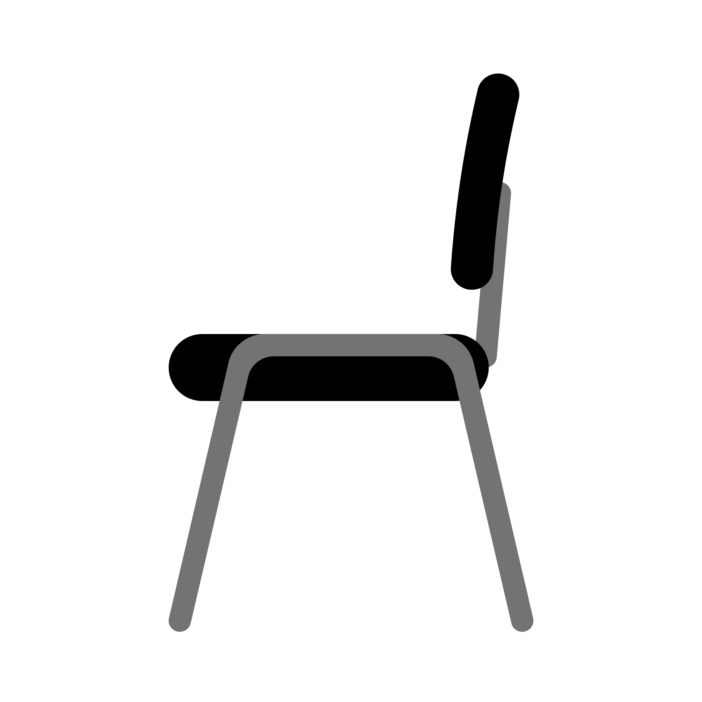
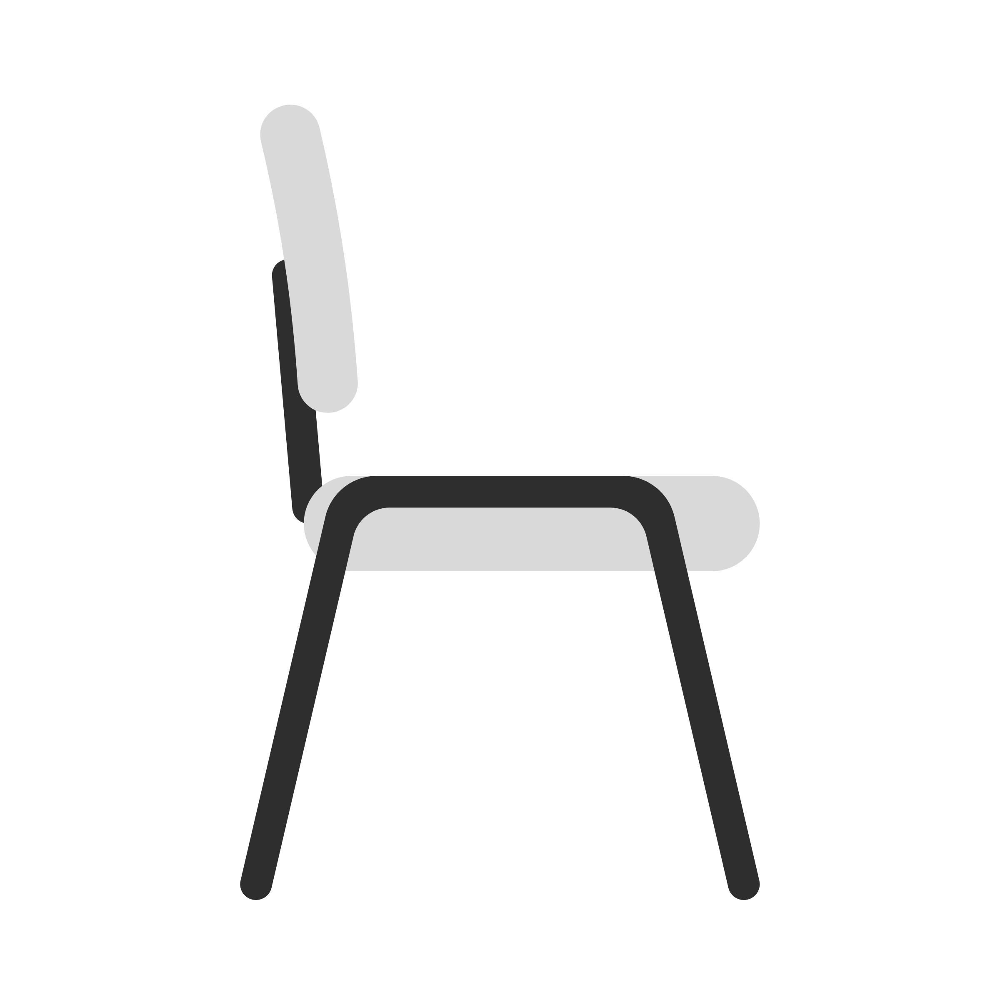

Our discipleship framework, leader resources, and student ministry tools — built to help students take intentional next steps in their faith alongside caring adults.
We cared so much for you that we were delighted to share with you not only the gospel of God, but our very lives as well.
Every resource, every curriculum, every leader development tool is built on a single conviction: people need clarity about where they are and a pathway to what's next.
Discipleship resources must be simple enough to hold in your hand and complex enough to capture the full life of following Jesus. Language matters. Labels create lanes.
When curriculum, training, and communication systems work well, leaders are freed to do what only they can do — know students by name and walk with them toward Christ.
Before strategy, before systems, before curriculum — Jesus. He chose Twelve, invested in a few, engaged the crowd, followed up, and raised the bar. We do the same.
Leveraging the word picture of 4 Chairs, this helps us identify where a student sits spiritually so we can best lead them to what's next. Built to give leaders, students, and parents a shared vocabulary for spiritual growth. Four chairs. Four movements. Disciple cycles.

The invitation before the commitment. Every student matters before they believe. We move toward them.

The starting line, not the finish line. Every new believer needs to establish spiritual disciplines for lifelong growth in Christ.
Students learn to pursue the lost, share their story, and grip the plow of ministry. They've shifted from me-centric to others-centric.
A movement begins. Someone they led to Christ is now discipling someone they led to Christ.
The 4-Chair model gives every leader, parent, and student a shared language. It removes ambiguity. It names where someone is without judgment. And it creates a clear, compelling picture of where Jesus is calling them next. It scales from a single small group to a multi-campus student ministry.
Every resource below was created for actual ministry use — designed to be clear, practical, and scalable across campus contexts. Click any card to view the document.
A single-page overview of the heartbeat of who we are and what we do in student ministry. Designed to orient new leaders fast and keep veterans anchored to the why.
A comprehensive leader training workbook covering mission, vision, model, tools, roles, and how to make disciples — including the 4-Chair personal inventory, Southeast Mantras reflection, and practical expectations for weekly, monthly, and semester rhythms.
A visual aid mapping Jesus' ministry across 5 phases — from Preparation through Leadership Multiplication — alongside the early church's multiplying movement in Acts. Shows how the 4-Chair language maps across the full arc of Jesus' life.
A year long road map for team leaders to help shepherd leaders in our ministry — covering mission & mantras, the Team Leader role and expectations, monthly Key Conversations (1-on-1), Team Dialogues, the Big Three leader events, leader development frameworks, and further resources for building effective teams.
These aren't slogans. They're Scripture-rooted postures that shape how we engage the mission every single week.
We connect in community. We value connection over production.
We connect the full force of the church with the Holy Spirit. We value risk and adventure over safety and comfort.
We will radically love people one at a time. We value innovation over tradition.
We serve with intentional and focused effort. We value personal engagement over attendance.
We connect through sacrificial generosity. We value expressive worship over religious rituals.